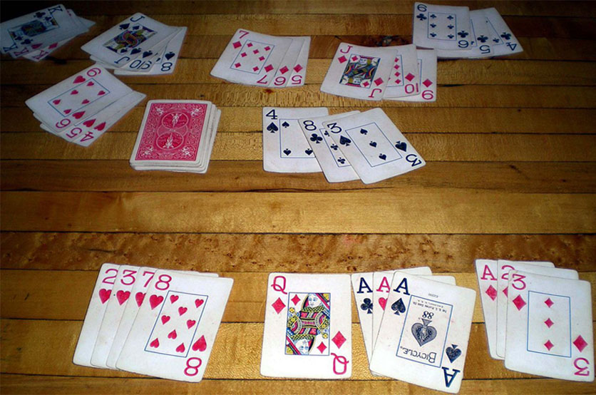

Remi
Ovu igru može igrati dva ili više igrača. Koriste se dva špila karata (sa džokerima). Cilj igre je sakupljanje karata koje su istog broja ili istog znaka. Vrednosti karti su sledeći:
- 2-9 se računaju kao vrednosti tih brojeva
- 10, J, Q i K imaju vrednost 10
- A – ukoliko se skuplja u nizu 1-9 ima vrednost 1, a ukoliko se skuplja sa 10, J, Q i K ima vrednost 10
- Joker – menja bilo koju kartu
Igra počinje tako što jedan od igrača „precepi“ špil (uzima se određena količina karata) i sa dna uzima kartu koja stoji okrenuta na gore tokom cele partije ispod tih karata i stavlja je na sto. Ukoliko je ta karta džoker, zadržava je sebi i uzima sledeću. Ostatak karata se deli tako što se igraču koji prvi igra daje prvo 3 karte, a ostalima po dve tako da po završetku deljenja igrač koji igra prvi ima 15 karata, a ostali po 14. Nakon deljenja, igrač koji igra prvi izbacuje jednu kartu koja mu nije potrebna. Nakon toga svaki sledeći igrač, nakon što napravi raspored karata, uzima karte iz ostatka špila koji je okrenut na dole i ne pokazuje je. Ukoliko mu je potrebna, uzima je i izbacuje kartu koja mu ne treba, ukoliko ne, stavlja je preko izbačenih karti koje su okrenute na gore. Poslednja karta koja je okrenuta na gore može se uzimati tek onda kad se igrač može otvoriti.
U trenutku kada zbir dela karata iznosi 51, moguće je otvaranje. Prilikom otvaranja, spuštaju se na sto skupovi od najmanje 3 karte istog broja ili znaka. Nakon prvog otvaranja, igrač može da otvori karte u svakom trenutku, bez obzira na zbir. Pored toga, može dodavati karte drugom igraču ukoliko mu ta karta nedostaje.
Pobednik je onaj igrač koji prvi ostane bez karata.